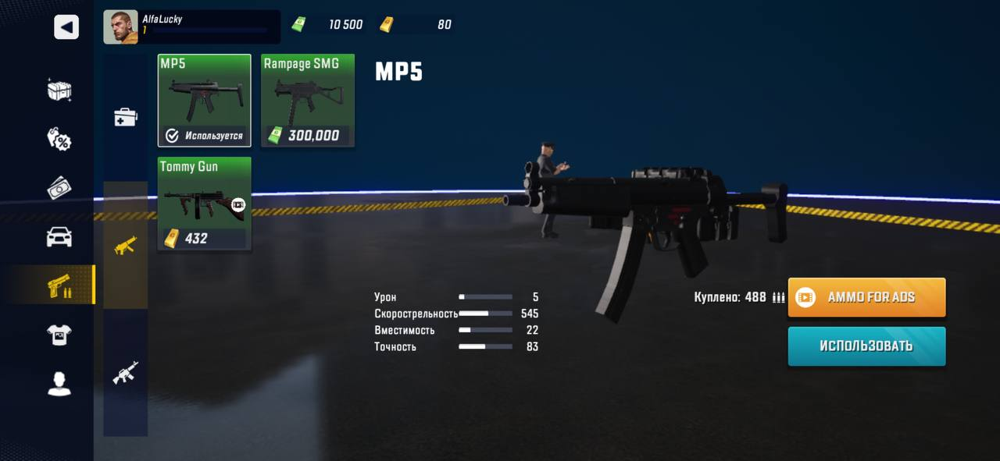
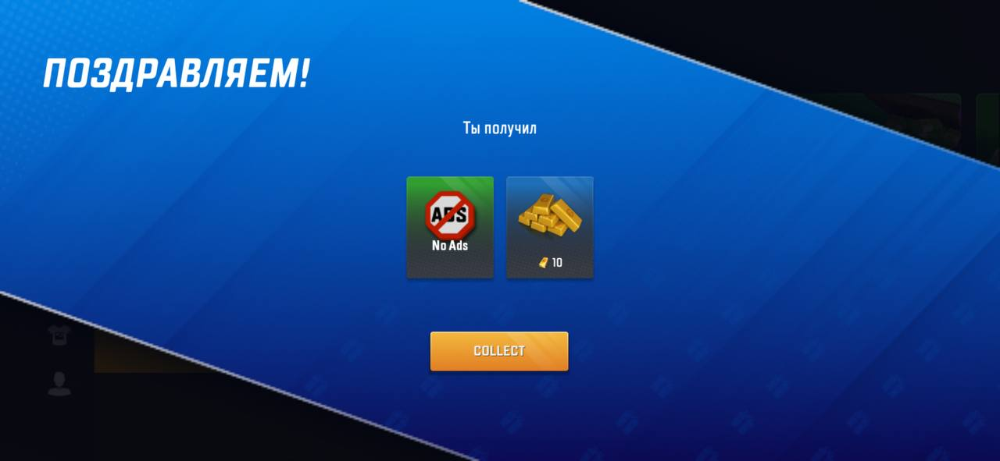

Предложения по улучшению (UX/FTUE)
1. Отсутствует фоновая музыка
Добавить ненавязчивый музыкальный фон для создания атмосферы и вовлечения игрока. Сейчас игра ощущается «пустой».
2. Реклама при первом запуске
Новый игрок сразу сталкивается с рекламой до обучения. Это может отпугнуть. Рекомендация: показывать рекламу после прохождения туториала или после первого геймплея, чтобы не снижать удержание.
3. Оценка игры до геймплея
Система предлагает оценить игру до начала полноценного геймплея. Рекомендация: перенести запрос на оценку после 2–3 игровых сессий или при достижении первого уровня/успеха.
4. Низкополигональная модель персонажа при выборе
В сцене выбора персонажа используется модель с низким LOD. Рекомендация: использовать модель с более высоким качеством или текстурой для первого впечатления.
Скриншот:
5. Оффер с низким DPI изображения
В приветственном оффере изображение размылено/низкого качества. Рекомендация: заменить на картинку с более высоким разрешением для лучшего визуального восприятия.
Скриншот:
Баг-репорты
Баг №1 — Указатели тутора заходят за область кнопки
Окружение: IOS 18.6.2, Iphone 13 mini
Версия игры: 2.5.62 (публичная версия из App Store)
- Пройти первую часть обучения.
- Дождаться появления туториального указателя.
Ожидаемый результат: Указатель корректно расположен и не перекрывает кнопку.
Фактический результат: Указатель частично заходит за область кнопки, затрудняя понимание, куда нажимать.
Критичность: Minor
Скриншот:
Баг №2 — Указатели тутора указывают не на грань кнопки, а на центр
Окружение: IOS 18.6.2, Iphone 13 mini
Версия игры: 2.5.62 (публичная версия из App Store)
Шаги воспроизведения:
- Пройти обучение.
- Обратить внимание на расположение стрелок/указателей.
Ожидаемый результат: Указатель направлен на край или конкретную кнопку.
Фактический результат: Указатель указывает в центр кнопки, создавая ощущение неточности.
Критичность: Minor
Скриншот:
Баг №3 — Часть интерфейса не переведена при русской локализации
Окружение: IOS 18.6.2, Iphone 13 mini
Версия игры: 2.5.62 (публичная версия из App Store)
Шаги воспроизведения:
- Включить русскую локализацию.
- Просмотреть интерфейс и меню.
Ожидаемый результат: Весь интерфейс переведён на выбранный язык.
Фактический результат: Некоторые элементы (например, кнопки или тексты в окнах) остаются на английском языке.
Критичность: Major
Тип: Localization
Скриншот: 
Баг №4 — Отсутствует телефон в руках персонажа
Окружение: IOS 18.6.2, Iphone 13 mini
Версия игры: 2.5.62 (публичная версия из App Store)
Шаги воспроизведения:
- Начать сцену входа, где персонаж держит телефон.
Ожидаемый результат: Телефон отображается в руках персонажа.
Фактический результат: Телефон отсутствует, создавая визуальную ошибку.
Критичность: Visual bug (Minor)
Скриншот:
Баг №5 — Туториал зависает, если выбрать уже выбранную машину
Окружение: IOS 18.6.2, Iphone 13 mini
Версия игры: 2.5.62 (публичная версия из App Store)
Предусловие: Игрок уже выбрал одну из трёх машин ранее.
Шаги воспроизведения:
- Пройти первую часть обучения до момента выбора машины.
- В меню выбора машин снова нажать на ту же машину, которая была выбрана ранее.
- Обратить внимание на поведение туториала.
Ожидаемый результат: Туториал корректно реагирует на выбор любой машины (в том числе ранее выбранной) и переходит к следующему шагу.
Фактический результат: При выборе уже выбранной машины туториал перестаёт показывать дальнейшие указания и «зависает». Продолжить обучение можно только при выборе другой, ранее не выбранной машины.
Критичность: Major (блокирует прогресс)
Тип: Logic / FTUE bug
Вероятность воспроизведения: 100%
Возможное влияние: Игрок может подумать, что игра зависла, и покинуть приложение → потеря удержания.
Рекомендация: Добавить обработку повторного выбора уже выбранного объекта (пропустить шаг, показать подсказку или подтвердить выбор) и не блокировать прогресс.
Скриншот: